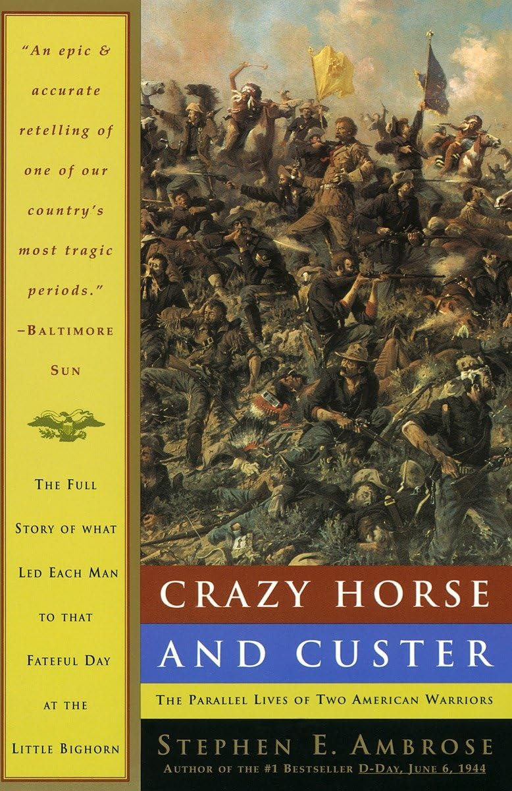

"Crazy Horse and Custer: The Parallel Lives of Two American Warriors"
- Read on 2025-07-25
- Rating: ️️️️️
- Format: 🎧 (20 hours 34 minutes)
The author's respect and admiration for Native Americans was obvious, and I applaud him for that. I had to remind myself this book was written in 1975, since he also continued to use outdated terms which would now be considered derogatory. Regardless, the culture and upbringing of Crazy Horse was remarkable. He had some rough patches in his life, but also seemed very focused on trying to carry on, and defend the traditions (or the right to practice the traditions) of his people. I left further impressed by him, his people, and their way of life.
Repeatedly I'm disappointed by the actions of people in the past. I lament the US Government's treatment of the Native Americans. If you're so determined to take over a piece of land where other people already live, it's hard to do so without disrupting their way of life. It's understandable if the existing residents are opposed to that.
Custer himself was an interesting person. Highly ambitious. Fought to end slavery, but couldn't view others as deserving the same human rights he enjoyed. He came across as deeply insecure, yet full of bravery and confidence. Ultimately he should have paid more attention at West Point - something that his status of "last in his class" could have already told us.
The Battle of Little Bighorn was simply the culminating event for these two men. Custer made grievous mistakes in a battle that shouldn't have been happening to begin with. Crazy Horse out-Generaled him. The various reservations across our country indicate the final outcome of this battle and war. Everybody lost.
- Prior: Slow Horses
- Next: Co-Intelligence